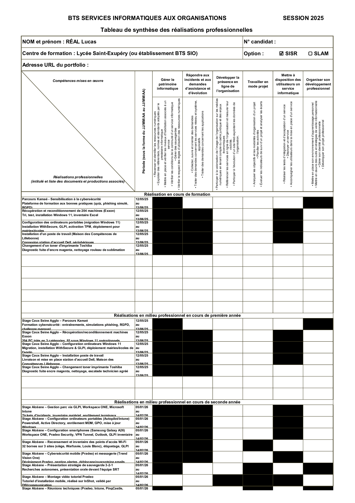

Au cours de mes stages, j'ai eu l'opportunité d'intégrer des environnements professionnels variés dans le domaine de l'informatique et des réseaux. Ces expériences m'ont permis de mettre en pratique mes compétences techniques, de travailler en équipe avec des professionnels et de développer mon sens des responsabilités dans un contexte réel.
Ce tableau recense l'ensemble de mes réalisations professionnelles effectuées en stage et en formation, associées aux compétences du référentiel BTS SIO SISR.
